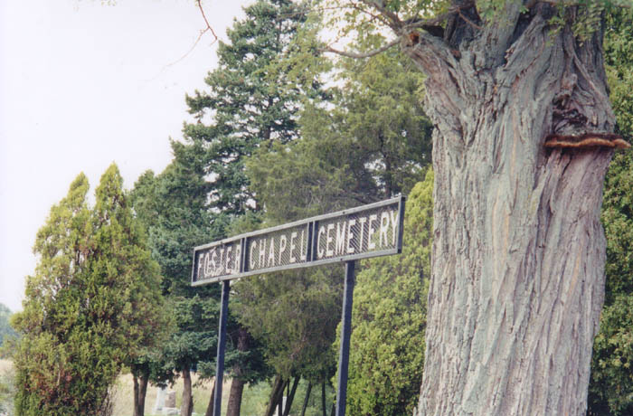

It's just an ordinary old cemetery on Plain City-Georgesville Road, a mile or so west of Columbus, just across the county line in Madison County. It's shady and pleasant and nicely laid-out, with a gravel cul-de-sac surrounding a flagpole and a central monument.
Historically, its claim to fame is the grave of Jonathan Alder, the first white person to live in Madison County. He was captured by Indians at the age of seven from his family in Virginia and brought here. After the Treaty of Greenville ended the Indian Wars, he went back to his family, and then returned to central Ohio to serve as an interpreter for settlers moving into the area.

Although any isolated farm field cemetery like this is creepy enough at night, this one has something particularly dark about it. If you go past the gravestones into the back right corner, you'll find a thin wooden cross wired to the rear fence.
Written on the handmade cross in reflective address stickers are two things. Horizontally it says JESSICA LYNN KEEN; top-to-bottom it says KILLED HERE MARCH 17, 1991.
Jessica Lynn Keen was indeed killed at this very spot in 1991. A fifteen-year-old girl from Columbus, she was an honor student and a cheerleader until she met eighteen-year-old Shawn Thompson. Dating Thompson apparently led her to quit cheerleading and skip school frequently to see him. Her parents, in a move that seems a little extreme to me, had her placed in a group home for troubled teens on March 4, 1991. It was a place called Huckleberry House. I've always thought of children as people, and teenagers as very nearly adults, and I hate seeing them treated like prisoners because they won't bend sufficiently to a parent's will. The things I've heard that Jessica did are nowhere near sufficient for her to have been sent to be monitored and controlled by strangers. She must have been terribly unhappy there.
After a phone argument with her boyfriend, Jessica left the home on March 15, saying she was going to the City Center Mall. The last time anyone saw her alive she was waiting for a COTA bus at Weinland Park.
It wasn't until March 17 that Jessica Keen's body was found in Foster Chapel Cemetery west of Columbus. She had been raped and beaten to death. Her pendant, with the word "TAKEN" carved on it, was missing, but her watch and ring were still on her hand. Apparently she escaped from her captor or captors and was caught up with at the back of the cemetery, where she was murdered. Police initially suspected the boyfriend, but DNA testing quickly ruled him out as a suspect.
This left police empty-handed, and for well over a decade no one was ever brought to trial for Jessica's murder. It was a well-known cold case around Columbus and was even featured on the Auguest 2, 2001 episode of Unsolved Mysteries. When I first visited Foster Chapel and created this page, I was dealing with an entirely unsolved murder case. But all of that changed in 2008.
Although I have never heard that this cemetery is haunted, it seems a likely candidate. The events that took place here one March night more than a decade ago are certainly dark enough to mark Foster Chapel Cemetery.
On a personal level, it's shocking to me because I think I knew Jessica Keen. I say this tentatively because it's the pieced-together memories of a child, but I always recalled a teenaged girl who lived in one of the other apartments in our breezeway at Weston Gardens, on Norton Road, who was killed. I had some vague awareness that she was rebelling and had a boyfriend picking her up; we used to pass her in the mornings on our way to the parking lot, me a nine- or ten-year-old following my mom, her a quiet, pretty girl hugging her books to her lap while she sat on the breezeway steps. We would say hi; she would smile. I know I had a bit of a little-boy crush on her.
Later on I heard on the news about a west side girl who was found dead in a cemetery, naked but for socks. Those two details stuck with me, the cemetery because she was incongruously dead among the dead who belonged there, and the socks because it was such a shocking detail. She was a girl from Westland High, who had lived near us in our apartment complex, or so my parents told me. It wasn't until I was told about Foster Chapel for this website that I put one and one and one together, remarkable coincidences all in a row. I was only eleven when she was murdered, and I don't think I ever really talked to her, but I do remember her--waiting there all alone in the mornings, perfumed and with her bangs teased up high, sophisticated and beautiful in my eyes.
I wish I had talked to her. I wish somebody could have reacted properly to what she was doing--"rebelling." I wonder if she was miserable at that "group home" for "troubled teens." I hope she had some happiness before things ended for her in a waking nightmare.

This, by his own admission, is the man who killed Jessica: Marvin Lee Smith, Jr. He was caught late because he was not an obvious suspect and the DNA evidence which would have made conviction easy wasn't available at the time. Instead, Smith served a nine year sentence for two other attempted assaults on Columbus-area women. During that time a law came into effect requiring convicts to provide DNA samples for a statewide database. From there it was a simple matter of matching the evidence collected at the scene against Ohio's offender database--but this took a couple of years, and by the time they got around to checking it Mr. Smith was living and working in Burlington, North Carolina. He was arrested in 2008 by North Carolina police, who obtained another sample for extra verification, and then he was brought back to Ohio, where he gave a confession and received his sentence on February 27, 2009: thirty years to life. His cooperation probably kept him off death row.
If you're squeamish, or if you just don't like to hear horrific tales of human suffering, you might not want to read on from this point, because we now know exactly what happened to Jessica Keen that April day in 1991 that turned out to be her last.
Smith abducted her from a Weinland Park bus stop around 6PM. He must have driven her out of the city (the Dispatch article isn't clear), but she escaped her bindings when they were near Foster Chapel cemetery and ran for it. Police found torn pieces of duct tape and tattered clothing along the path she must have taken in a desperate attempt to flee her kidnapper. But she hit a wooden fencepost and was knocked to the ground.
Marvin Lee Smith, Jr. caught up with her there, and it was there that he pulled a 70-pound tombstone out of a nearby grave and used it to beat her to death. It broke in two while he was using it as a bludgeon; afterward he threw the pieces over the back cemetery fence.
So...there we finally have it. The whole story. Not a good one, but at least a complete one. And this nondescript country cemetery was the scene of the whole nightmare ordeal. What more can you say? The world can be a terrible place sometimes.
Columbus Dispatch article: "Suspect Admits He Raped, Murdered Westland Cheerleader in 1991"
Columbus Dispatch article: "Charges Expected in 1991 Murder"
Victims of Violent Crime: Jessica Keen
Back
forgottenohio@yahoo.com